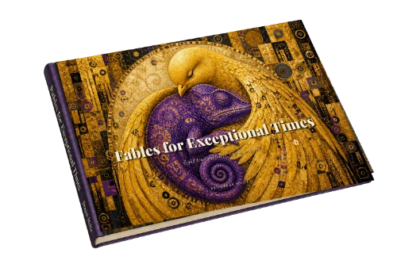
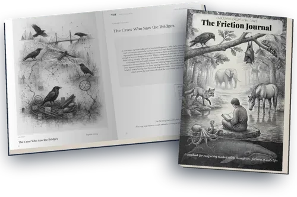

The fables help you recognise what might be there. The Friction Journals help you discover what it needs. Neither tells you what you are.

Nearly ready · Early access
Recognition through story
Fables for Exceptional Times
Eight stories about capabilities that are often first experienced as friction. You may recognise yourself. You may recognise someone you work with, teach, raise or love.
You do not have to decide what that means. Start by noticing.

Nearly ready · Early access soon
Exploration through reflection
The Friction Journals
Take a talent out of the fable and look for it in your own life: where it helps, where it collides with context, what conditions let it work, and what others may misunderstand about it.
The aim is not a profile. It is enough confidence to explain what you bring, what you need, and how the people around you can meet the capability rather than only the friction.
Friction Journal early access opens soon
Recognise→Explore→Understand the conditions→Express with confidence
The same constellation. Different places to meet it.
TƎT does not sort people. It gives different conversations a shared language for noticing what may be happening between a mind and its environment.
TƎT is deliberately unfinished when it reaches you. There is no score, no dominant talent and no correct constellation.
It does not claim every difficulty is secretly a gift. It asks a smaller question: what else might be present — and what changes when the context changes?
A fable gives you somewhere to recognise yourself. The framework gives you language to talk about what you noticed.
You do not need a label to begin.
Start with the animal that keeps looking back at you.
The first copies are for people willing to do a little more than read them. You get early access to buy the Ambassador Edition; in return, tell me how you could help the stories reach the people, teams or young minds who might recognise something in them.